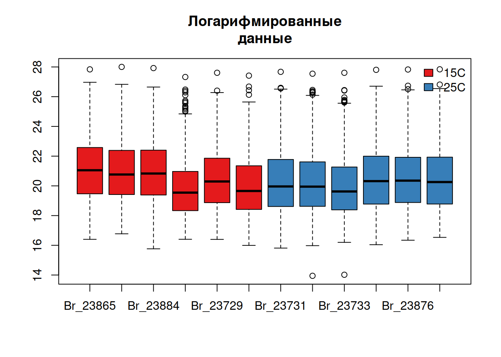
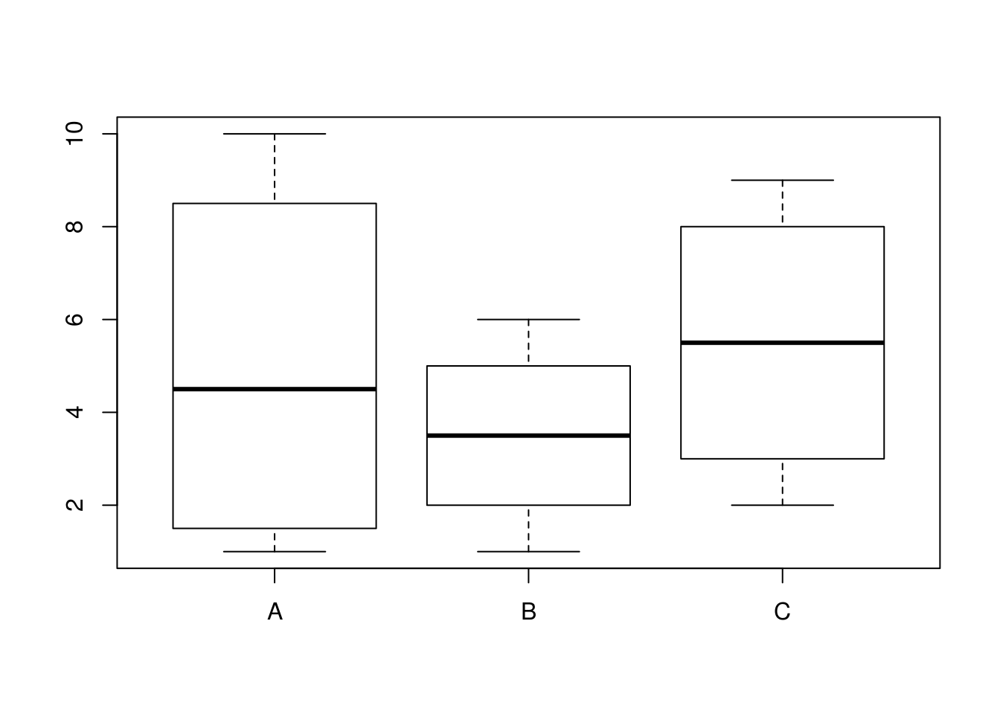
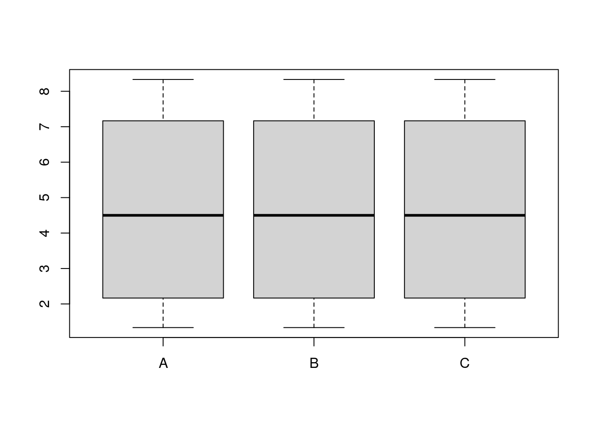
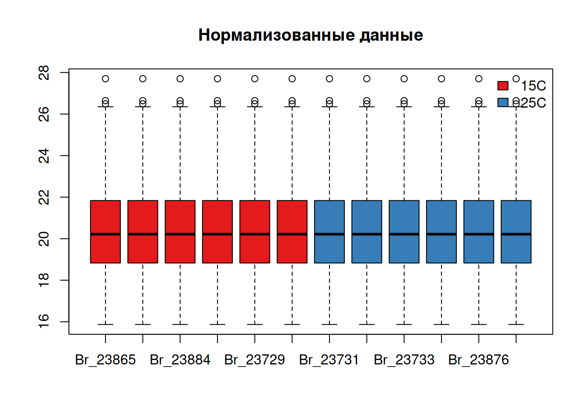
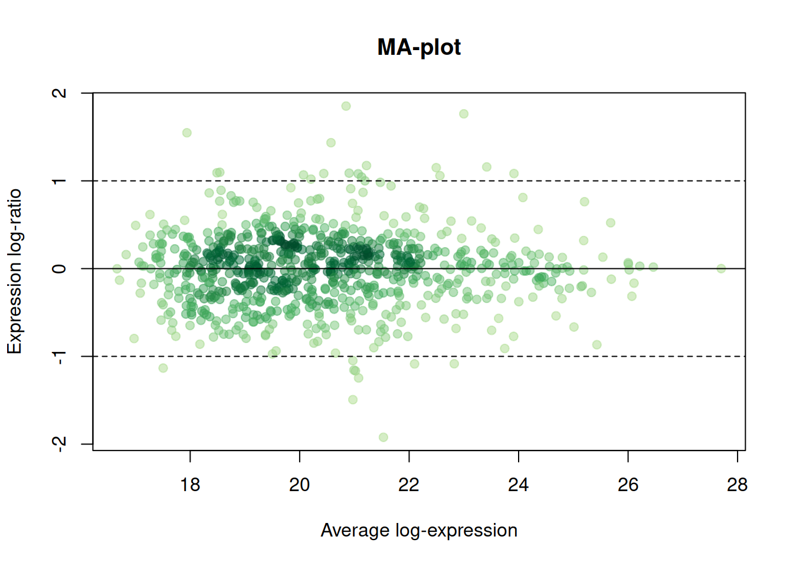
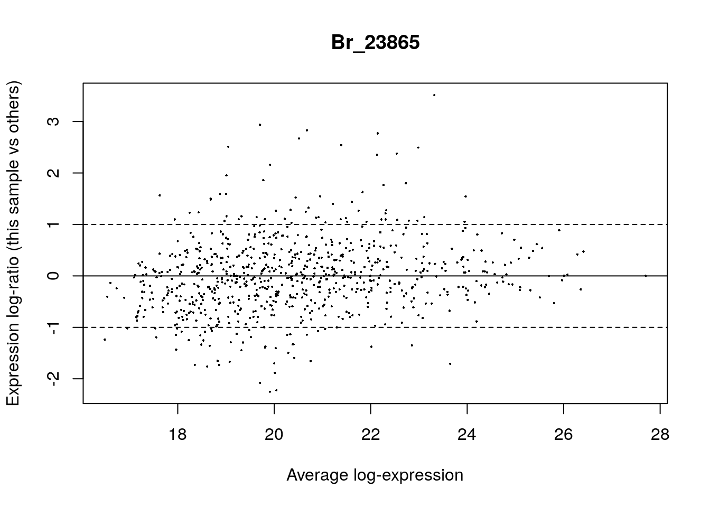
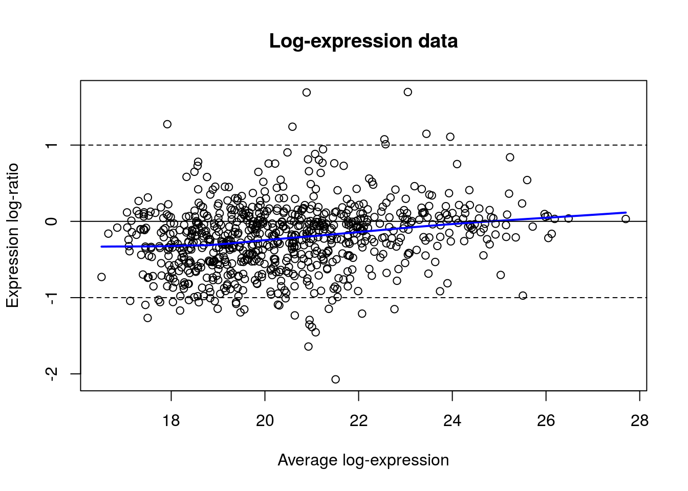
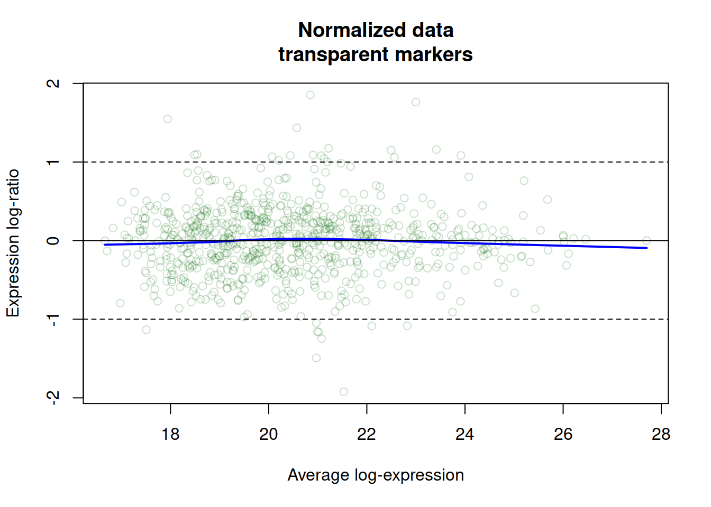
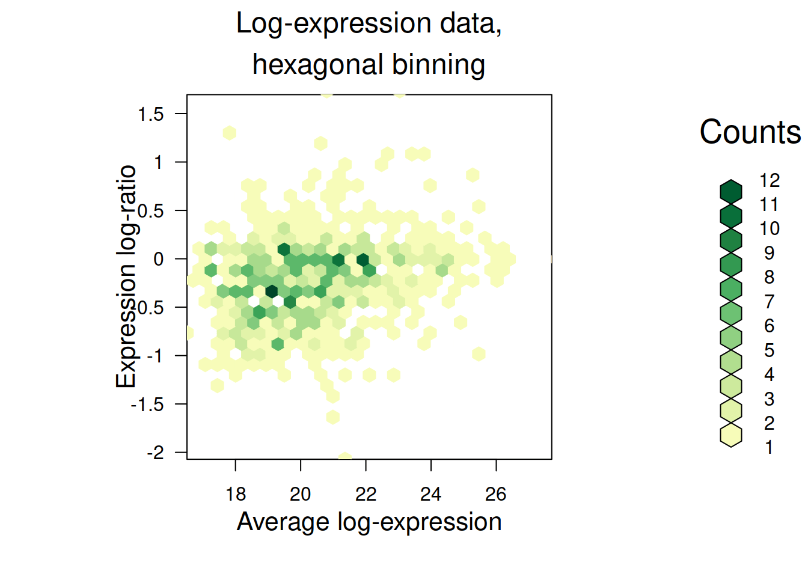

Предварительная обработка данных
Марина Варфоломеева
В этом разделе мы поговорим о том, как готовить данные 2-DIGE для статистической обработки в R (R Core Team 2021).
Данные о протеоме жабр гребешка Pecten maximus от авторов пакета
prot2D(Artigaud et al. 2013):Данные о протеоме сыворотки крови пациентов, страдающих разной степенью гиперплазии предстательной железы, из пакета
digeR(Fan et al. 2009):Пакеты (инсталлируйте при необходимости):
# Из репозитория CRAN
install.packages(c("Hmisc", "RColorBrewer"))
# С сайта Bioconductor
if (!requireNamespace("BiocManager", quietly = TRUE))
install.packages("BiocManager")
BiocManager::install(c("Biobase", "impute", "pcaMethods", "limma", "hexbin"))Пример: протеом жабр гребешка Pecten maximus
Для работы мы будем использовать данные о протеоме жабр гребешка Pecten maximus от авторов пакета prot2D (Artigaud et al. 2013). Гребешков подвергали воздействию двух разных температур (15 и 25 градусов, по 6 гребешков в каждой группе). В этом исследовании, в общей сложности, было обнаружено 766 пятен.
Пакет prot2D (Artigaud et al. 2013), в котором хранятся данные, был удален из Bioconductor начиная с версии 3.9, поэтому давайте будем загружать данные из файлов, а не из пакета (но названия сохраним как в пакете).
В файле “pecten.xlsx” на листе “exprs” хранятся необработанные данные интенсивностей пятен (raw volume data).
library(readxl)
pecten <- read_excel(path = "data/pecten.xlsx", sheet = "exprs")
head(pecten)## # A tibble: 6 x 13
## Spot Br_23865 Br_23883 Br_23884 Br_23728 Br_23729 Br_23730 Br_23731 Br_23732
## <dbl> <dbl> <dbl> <dbl> <dbl> <dbl> <dbl> <dbl> <dbl>
## 1 126 4917372 3700556 5602088 1039165 16948657 5301985 4630511 12969625
## 2 155 629380 538182 542741 550110 1400204 3507947 7428518 2445648
## 3 168 1253252 826822 1409779 394781 466173 1417415 8679783 1193694
## 4 285 812838 687181 1029228 456423 932717 3181137 2013180 4686766
## 5 315 179237 304762 293371 213861 170629 1127119 1982368 1003908
## 6 328 680000 595649 482669 149826 202873 124643 179772 205291
## # … with 4 more variables: Br_23733 <dbl>, Br_23875 <dbl>, Br_23876 <dbl>,
## # Br_23877 <dbl>
Функция str() позволяет нам взглянуть на структуру любого объекта в R. О датафреймах она сообщит число строк и колонок, а так же покажет, к какому типу данных относятся колонки и первые несколько значений.
str(pecten)## tibble [766 × 13] (S3: tbl_df/tbl/data.frame)
## $ Spot : num [1:766] 126 155 168 285 315 328 302 346 518 504 ...
## $ Br_23865: num [1:766] 4917372 629380 1253252 812838 179237 ...
## $ Br_23883: num [1:766] 3700556 538182 826822 687181 304762 ...
## $ Br_23884: num [1:766] 5602088 542741 1409779 1029228 293371 ...
## $ Br_23728: num [1:766] 1039165 550110 394781 456423 213861 ...
## $ Br_23729: num [1:766] 16948657 1400204 466173 932717 170629 ...
## $ Br_23730: num [1:766] 5301985 3507947 1417415 3181137 1127119 ...
## $ Br_23731: num [1:766] 4630511 7428518 8679783 2013180 1982368 ...
## $ Br_23732: num [1:766] 12969625 2445648 1193694 4686766 1003908 ...
## $ Br_23733: num [1:766] 2869155 947371 1404948 1838193 663169 ...
## $ Br_23875: num [1:766] 1771437 412389 734174 494954 205179 ...
## $ Br_23876: num [1:766] 2707717 398940 688123 570196 126639 ...
## $ Br_23877: num [1:766] 7120168 380115 1214332 556449 287212 ...
Мы видим, что в датасете pecten есть данные о 766 белках в 12 пробах, в первом столбце записаны номера пятен, а колонки называются кодовыми обозначениями проб. Имеет смысл из номеров пятен сделать названия строк при помощи функции rownames() и удалить столбец с номерами пятен:
spot_names <- pecten$Spot
pecten <- as.matrix(pecten[, -1])
rownames(pecten) <- spot_namesВторая составляющая данных, которая у нас есть — это данные о принадлежности гребешков к разным вариантам экспериментальной обработки, которые записаны на листе “pheno” в том же файле.
pecten.fac <- read_excel(path = "data/pecten.xlsx", sheet = "pheno")
head(pecten.fac)## # A tibble: 6 x 2
## Sample Condition
## <chr> <chr>
## 1 Br_23865 15C
## 2 Br_23883 15C
## 3 Br_23884 15C
## 4 Br_23728 15C
## 5 Br_23729 15C
## 6 Br_23730 15C
str(pecten.fac)## tibble [12 × 2] (S3: tbl_df/tbl/data.frame)
## $ Sample : chr [1:12] "Br_23865" "Br_23883" "Br_23884" "Br_23728" ...
## $ Condition: chr [1:12] "15C" "15C" "15C" "15C" ...
В датасете pecten.fac описаны свойства 12 проб. В данном случае, всего одно свойство известно — это Condition, температура, при которой содержали гребешков. При помощи функции table() мы можем посчитать гребешков в каждом варианте эксперимента.
table(pecten.fac$Condition)##
## 15C 25C
## 6 6
Объект pecten.fac лучше превратить в обычный датафрейм. Переменную Condition лучше сделать фактором.
pecten.fac <- data.frame(pecten.fac)
pecten.fac$Condition <- factor(pecten.fac$Condition)Импутация пропущенных значений.
Довольно часто бывает так, что в матрице экспрессии могут пустовать некоторые ячейки. Пятно может быть обнаружено на одном геле, но отсутствовать на других в силу различных причин. Например, в силу различий между биологическими репликами, из-за различий между техническими репликами по техническим причинам, из-за ошибок в идентификации пятен, из-за плохой изоэлектрической фокусировки, из-за малого количества белка и т.п.
Отсутствие пятна на геле может обозначать разные вещи: белок может действительно отсутствовать, либо он отсутствует в силу технических причин, либо он все же присутствует в концентрации ниже порога определения. Отсутствие пятна на всех технических повторностях может скорее означать отсутствие белка — в таких ячейках можно записать нули. Однако, если пропущенные значения появились в результате неправильного сопоставления пятен, то замена их нулями может исказить данные. Если мы имеем дело с истинно пропущенными значениями, то такие ячейки мы оставим пустыми, а R во время чтения данных автоматически преобразует их в NA (специальное обозначение пропущенных данных, от англ. not available).
Как поступать с пропущенными значениями? Есть несколько возможных вариантов. Ниже приведены некоторые распространенные способы заполнения пропущенных значений. Не все из них одинаково хороши, кроме того, есть и много других, помимо этого списка (см., например, Sellers and Miecznikowski 2012).
(а) Исключение переменных, в которых есть пропущенные значения (использование только “надежных” белков) сильно снижает “интересность” анализа, потому что многие белки будут исключены, и в результате останется меньше пятен.
(б) Замена пропущенных значений средними значениями экспрессии данного белка в разных образцах (mean substitution). Это довольно грубый вариант, который вносит искажения в данные.
(в) Замена NA средним по k-ближайшим соседям — хороший метод импутации [k-nearest neighbour averaging; Troyanskaya et al. (2001)]. Как работает этот метод мы разберем подробнее и потренируемся его использовать.
Для импутации используют данные по всем техническим и биологическим репликам. После импутации можно будет усреднить технические реплики, либо анализировать их отдельно.
Очень сложный и противоречивый вопрос о том, в какой момент нужно делать импутацию — до или после того, как данные были нормализованы. К сожалению, однозначного ответа нет. Многие методы нормализации требуют, чтобы не было пропущенных значений, это побуждает исследователей начинать с импутации. Однако, при импутации по “сырым” данным существует опасность искажения данных, поэтому все время стараются разработать методы нормализации, которые могут работать с пропущенными значениями и учитывают известные источники изменчивости экспрессии (Karpievitch et al. 2012). Эти методы позволяют делать импутацию по нормализованным данным. Здесь мы будем придерживаться традиционного подхода с предварительной импутацией (пусть он и не лучший из возможных).
Данные для демонстрации методов импутации
В нашем примере пропущенных значений нет. В этом легко убедиться при помощи комбинации из нескольких функций.
colSums(is.na(pecten))## Br_23865 Br_23883 Br_23884 Br_23728 Br_23729 Br_23730 Br_23731 Br_23732
## 0 0 0 0 0 0 0 0
## Br_23733 Br_23875 Br_23876 Br_23877
## 0 0 0 0
Функция is.na() — проверяет, равно ли значение ее аргумента NA и возвращает логическое значение. is.na(pecten) вернет двумерную таблицу, в которой TRUE будет встречаться, только если соответствующий элемент в датафрейме pecten был NA. Логическим значениям TRUE и FALSE соответствуют 1 и 0. Если мы посчитаем суммы значений в каждом из столбцов таблицы при помощи функции colSums(), то мы получим число NA для каждого из них.
Чтобы можно было сейчас продемонстрировать, как работает импутация пропущенных значений, нам потребуется, чтобы в датасете pecten все-таки они были, поэтому мы в учебных целях специально заменим случайно выбранные ячейки на NA.
# "Портим" данные пропущенными значениями, чтобы создать пример для демонстрации работы методов импутации.
# Сколько всего чисел в pecten?
N <- prod(dim(pecten))
N## [1] 9192
# зерно генератора случайных чисел
set.seed(392408154)
# выбираем 1000 случайных ячеек
id <- sample(1:N, size = 1000)
spect <- as.matrix(pecten)
spect[id] <- NA
# Вот что получилось:
colSums(is.na(spect))## Br_23865 Br_23883 Br_23884 Br_23728 Br_23729 Br_23730 Br_23731 Br_23732
## 72 83 77 75 90 99 77 81
## Br_23733 Br_23875 Br_23876 Br_23877
## 88 85 92 81
table(rowSums(is.na(spect)))##
## 0 1 2 3 4 5
## 191 282 193 73 22 5
Теперь можно приступать к тренировке заполнения пропущенных значений. Мы испробуем разные способы, а поскольку в этом учебном примере у нас есть доступ к настоящим значениям экспрессии из исходного датасета, то мы сможем сравнить их со значениями после импутации.
Исключение переменных, в которых есть NA
Исключение переменных, в которых есть NA (использование только “надежных” белков) сильно снижает “интересность” анализа, потому что многие белки будут исключены.
f_na <- rowSums(is.na(spect)) < 1
ipect_none <- spect[f_na, ] Если сравнить размеры получившихся датафреймов, видно, что пришлось исключить очень много белков.
dim(spect)## [1] 766 12
dim(ipect_none)## [1] 191 12
Именно поэтому такой метод никто не использует.
Замена NA средними значениями
Замена NA средними значениями экспрессии данного белка в разных образцах (mean substitution). Это довольно грубый вариант, который вносит искажения в данные.
library(Hmisc) # для функции impute
ipect_mean <- t(apply(X = spect, MARGIN = 1, FUN = impute, fun = mean))Замена средним по k-ближайшим соседям
Метод импутации по k-ближайшим соседям заменяет каждое пропущенное значение взвешенным средним, рассчитанным по k-ближайшим белкам-соседям, у которых это значение не пропущено [k-nearest neighbour averaging; Troyanskaya et al. (2001)]. По качеству импутации с этим методом может соперничать только баесовский метод. Метод k-ближайших соседей реализован в пакете impute на Bioconductor (Hastie et al. 2020).

Импутация по k-ближайшим соседям
Допустим, у белка #1 есть пропущенное значение экспрессии в пробе A. Алгоритм вначале находит k белков с похожим паттерном экспрессии (соседей). Соседство определяется при помощи евклидова расстояния между белками, рассчитанного по пробам с известным уровнем экспрессии. Далее, в пробе А рассчитывается взвешенное среднее уровней экспрессии этих k похожих белков. Вклад каждого белка взвешивают по степени его сходства с белком #1.
Может случиться так, что у некоторых похожих белков есть пропущенные значения интенсивности экспрессии в некоторых других пробах. В этом случае, сходство между белками определяется как среднее сходств, рассчитанных по пробам без пропущенных для этих белков данных. Наконец, если вдруг так оказалось, что у нескольких похожих белков неизвестна интенсивность экспрессии в одной и той же пробе, тогда пропущенные значения алгоритм заменяет средним значением интенсивности по пробе.
Для импутации при помощи среднего по k-ближайшим соседям матрицу интенсивностей сначала нужно транспонировать, чтобы пробы были в строках, а белки в столбцах.
library(impute)
# транспонируем, чтобы белки были в столбцах
trans_spect <- t(spect)
knn_dat <- impute.knn(trans_spect, k = 5)
# в результате импутации получился сложный объект - список
str(knn_dat)## List of 3
## $ data : num [1:12, 1:766] 4917372 3700556 5602088 1039165 16948657 ...
## ..- attr(*, "dimnames")=List of 2
## .. ..$ : chr [1:12] "Br_23865" "Br_23883" "Br_23884" "Br_23728" ...
## .. ..$ : chr [1:766] "126" "155" "168" "285" ...
## $ rng.seed : num 3.62e+08
## $ rng.state: int [1:626] 10403 580 -308649120 379089321 513030857 -1054093359 354113799 -624149959 307680869 -1819445199 ...
# нам понадобится из него взять элемент data
ipect_knn <- t(knn_dat$data)
# Теперь нет пропущенных значений
colSums(is.na(ipect_knn))## Br_23865 Br_23883 Br_23884 Br_23728 Br_23729 Br_23730 Br_23731 Br_23732
## 0 0 0 0 0 0 0 0
## Br_23733 Br_23875 Br_23876 Br_23877
## 0 0 0 0
Импутация пропущенных значений при помощи байесовского анализа главных компонент
Замена NA при помощи байесовского анализа главных компонент [Bayesian principal component analysis, BPCA; Bishop (1999)]. Сравнение результатов импутации пропущенных значений при помощи различных методов показало, что этот метод — явный фаворит по качеству результата (Pedreschi et al. 2008). Байесовский анализ главных компонент реализован в пакете pcaMethods на Bioconductor (Stacklies et al. 2007). Здесь мы только бегло перечислим основные особенности метода, а в последнем разделе курса рассмотрим подробнее, как работает обычный анализ главных компонент.
Байесовский анализ главных компонент был адаптирован для заполнения пропущенных значений (Oba et al. 2003). Он состоит из двух частей: из анализа главных компонент (на основе максимизации ожидания) и байесовской модели. BPCA представляет многомерный массив векторов экспрессии в виде линейной комбинации меньшего числа главных осей и ошибки (ошибки и факторные координаты нормально распределены). Оптимальное для представления данных число главных осей находят при помощи кросс-валидации (метод называется kEstimate). Главные оси, найденные при помощи BPCA, чаще всего не будут ортогональны, в отличие от обычного PCA. Поскольку в исходной матрице есть пропущенные значения, главные оси будут состоять из известной и неизвестной частей. На заключительном этапе при помощи байесовского оценивания находят одновременно пропущенные значения, неизвестную часть главных осей и параметры нормального распределения.
В реализации BPCA из пакета pcaMethods пробы служат наблюдениями, гены — переменными, т.е. для применения BPCA нужно транспонировать матрицу экспрессии (Stacklies et al. 2007). Кроме того, нужно предварительно центрировать (вычесть среднее) и стандартизовать (разделить на стандартное отклонение) значения экспрессии в каждом столбце.
library(pcaMethods)
# транспонируем
trans_spect <- t(spect)
# центрируем и стандартизуем каждый столбец при помощи функции prep() из пакета pcaMethods.
scaled_spect <- prep(trans_spect, scale = "uv", center = TRUE, simple = FALSE)
# bpca
pc <- pca(scaled_spect$data, method="bpca", nPcs=2)
# восстановленные полные данные (центрированные и стандартизованные)
complete_obs <- completeObs(pc)
# возвращаем восстановленные данные в исходный масштаб
scaled_spect_complete <- prep(complete_obs, scale = scaled_spect$scale, center = scaled_spect$center, reverse = TRUE)
dim(scaled_spect_complete)## [1] 12 766
# транспонируем обратно
ipect_bpca <- t(scaled_spect_complete)
# убеждаемся, что размерность правильная
dim(ipect_bpca)## [1] 766 12
Сравнение результатов импутации разными методами.
В данном случае, у нас есть полные исходные данные, поэтому мы можем для интереса проверить, какой из методов импутации дал наилучший результат. В качестве меры ошибки мы посчитаем корень из средней суммы квадратов отклонений исходных полных данных и восстановленных. Эта величина называется root mean squared deviation и используется, например, для оценки качества предсказаний разных линейных моделей.
\[RMSE = \sqrt{\frac {\sum_{i=1}^{n} (y_{1,i} - y_{2,i})^2} {n}}\]
Здесь \(y_{1,i}\) и \(y_{2,i}\) — сравниваемые величины. Например, предсказанные моделью и наблюдаемые значения. А в нашем случае истинные и импутированные значения экспрессии.
Чем меньше значение RMSE, тем лучше.
Иногда величину RMSE нормализуют — делят либо на среднее значение, либо на диапазон значений. Полученная величина называется normalized RMSE(NRMSE). Нормализация позволяет сравнивать NRMSE для данных, измеренных в разных единицах.
\(NRMSE = \frac {RMSE} {y_{max} - y_{min}}\)
Мы напишем функцию для расчета RMSE.
RMSE <- function (act, imp, norm = FALSE){
act <- as.matrix(act)
imp <- as.matrix(imp)
max_val <- max(rbind(act, imp))
min_val <- min(rbind(act, imp))
N <- nrow(act) * ncol(act)
res <- sqrt(sum((act - imp)^2) / N)
if (norm == TRUE) res <- res / (max_val - min_val)
return(res)
}
# Пример расчета RMSE
RMSE(act = pecten, imp = ipect_mean)## [1] 1640690
Заметьте, чтобы на самом деле адекватно оценить качество работы разных алгоритмов импутации, нужно повторить всю процедуру, включая генерацию NA, много много раз — сделать бутстреп — здесь мы сделаем только грубую оценку.
Вот значения RMSE
results <- list("Mean" = ipect_mean, "KNN" = ipect_knn, "BPCA" = ipect_bpca)
sapply(results, RMSE, act = pecten)## Mean KNN BPCA
## 1640690 1486395 1640689
И вот значения NRMSE
sapply(results, RMSE, act = pecten)## Mean KNN BPCA
## 1640690 1486395 1640689
Как видно, в данном примере knn показал себя лучше всех (это, правда, не значит, что это всегда будет лучшим решением). knn — очень часто используемый метод.
На этом наше знакомство с методами импутации закончено. В следующей части мы будем работать с первоначальными данными из датасета pecten.
Проблемы с использованием сырых данных экспрессии
Сырые данные нельзя использовать для анализа по нескольким причинам.
Общий уровень интенсивностей пятен на разных сканах (и на разных образцах) может быть “смещен.” Это может быть вызвано множеством факторов, от технических параметров до батч-эффекта.
Распределение интенсивностей пятен на одном геле асимметрично. Много пятен с низкой интенсивностью и несколько — с большой.
# Создаем палитру и вектор цветов
library(RColorBrewer)
pal <- brewer.pal(n = 9, name = "Set1")
cols <- pal[pecten.fac$Condition]
# Строим боксплот, чтобы посмотреть на распределение
boxplot(pecten, outline = FALSE, col = cols, main = "Исходные данные")
legend("topright", levels(pecten.fac$Condition), fill = pal, bty = "n", xpd = T)Перед анализом данные сначала логарифмируют (чтобы сделать распределения интенсивностей более симметричными), затем нормализуют (чтобы сделать разные образцы более сравнимыми друг с другом).
Логарифмирование
Обычно исследователей интересует отношение уровней экспрессии. Беда в том, что отношение несимметрично относительно 1. Например, пусть в пробе A уровень экспрессии 10, а в пробе B — 1. Если мы посчитаем соотношение уровней экспрессии \(A/B = 10/1 = 10\), если наоборот \(B/A = 1/10 = 0.1\). Уровень экспрессии в пробе А в 10 раз больше, чем в B, но величина соотношения зависит от порядка действий — это неудобно. Если мы будем использовать логарифмы, эта проблема исчезнет. Логарифм соотношения равен разнице логарифмов: \(log_{10}(A/B) = log_{10}(A) - log_{10}(B) = 10 - 1 = 9\), аналогично \(log_{10}(B/A) = log_{10}(B) - log_{10}(A) = 1 - 10 = -9\). Разница логарифмов распределена симметрично вокруг нуля, от порядка действий зависит только знак.
Обычно данные логарифмируют по основанию 2. С логарифмами по основанию 2 принято работать из-за удобства вычислений (числа получаются меньше по абсолютной величине) и удобства интерпретации (если мы считаем разницу логарифмов экспрессии в опыте и контроле и она равна единице, то это означает, что экспрессия различается в два раза). Подробнее об этом можно прочесть в разделе Соотношение уровней экспрессии.
Если в ваших исходных данных есть нули, то можно перед логарифмированием прибавить к ним небольшую константу, чтобы не получить -Inf. Т.е. преобразовать log2(x + 1).
# Логарифмируем данные
pecten_log <- log2(pecten)
# Строим боксплот
boxplot(pecten_log, col = cols, main = "Логарифмированные\nданные")
legend("topright", levels(pecten.fac$Condition), fill = pal, bty = "n", xpd = T)
После логарифмирования распределения интенсивностей стали более симметричными, но осталась на месте разница общего уровня экспрессии в разных образцах.
Нормализация
Для того, чтобы выровнять форму распределений применяют квантильную нормализацию.
Во время квантильной нормализации двух и более распределений значения переменных сначала сортируют. Затем, исходные значения одинакового ранга заменяют их средними значениями. Так, например, максимальные значения переменных станут средним максимальных значений и так далее.
Рассмотрим, что происходит при квантильной нормализации, на игрушечном примере.
Вот “матрица экспрессии”:
mat <- matrix(c(1, 7, 2, 10, 6, 3, 1, 4, 4, 7, 9, 2), ncol = 3)
rownames(mat) <- paste0("spot", 1:4)
colnames(mat) <- LETTERS[1:3]
mat## A B C
## spot1 1 6 4
## spot2 7 3 7
## spot3 2 1 9
## spot4 10 4 2
boxplot(mat)
Если ранжировать значения каждой из переменных, то матрица рангов будет выглядеть так:
ranks <- apply(mat, 2, rank)
ranks## A B C
## spot1 1 4 2
## spot2 3 2 3
## spot3 2 1 4
## spot4 4 3 1
Теперь нужно переставить значения в каждой из переменных в порядке, заданном их рангами. Если это сделать с переменной A (первый столбец), получится
mat[ranks[, 1], 1]## spot1 spot3 spot2 spot4
## 1 2 7 10
А вот и вся ранжированная матрица
ranked_mat <- apply(mat, 2, function(x) x[order(x)])
ranked_mat## A B C
## [1,] 1 1 2
## [2,] 2 3 4
## [3,] 7 4 7
## [4,] 10 6 9
На следующем этапе нужно посчитать среднее значение для каждой из строк — “цену” каждого ранга.
value <- rowMeans(ranked_mat)
value## [1] 1.333333 3.000000 6.000000 8.333333
Теперь эти “цены рангов” можно подставить вместо рангов в исходную матрицу. Если это сделать с первым столбцом, то получится:
value[ranks[, 1]]## [1] 1.333333 6.000000 3.000000 8.333333
Подставляем цены рангов вместо рангов во всю исходную матрицу:
mat_norm <- apply(ranks, 2, function(x) value[x])
mat_norm## A B C
## [1,] 1.333333 8.333333 3.000000
## [2,] 6.000000 3.000000 6.000000
## [3,] 3.000000 1.333333 8.333333
## [4,] 8.333333 6.000000 1.333333
После нормализации форма распределения всех переменных выравнялась.
boxplot(mat_norm)
Теперь давайте применим квантильную нормализацию к данным о протеоме гребешков.
library(limma)##
## Attaching package: 'limma'## The following object is masked from 'package:BiocGenerics':
##
## plotMA# Квантильная нормализация
pecten_norm <- normalizeQuantiles(as.matrix(pecten_log))
boxplot(pecten_norm, col = cols, main = "Нормализованные данные")
legend("topright", levels(pecten.fac$Condition), fill = pal, bty = "n", xpd = T)
После логарифмирования и нормализации распределение стало симметричным и приблизительно одинаковым во всех образцах — с данными можно работать дальше.
MA-plot (RI-plot)
MA-plot (Mean–Average plot) был изобретен для контроля качества данных экспрессии (Dudoit et al. 2002). Для протеомики он был адаптирован немного позднее и получил название RI-plot (Ratio–Intensity plot)(Meunier et al. 2005).
Как устроен MA-plot и что на нем видно?

- По оси X — общий средний уровень (интенсивность) экспрессии во множестве образцов (= Intensity = Average). Слева — белки с низким уровнем экспрессии, справа — с высоким.
- По оси Y — логарифм соотношения уровней экспрессии т.е. разница логарифмов уровней экспрессии (= Ratio = Mean) — либо в конкретном образце против всех остальных, либо в двух группах образцов. Сверху пробы, где в одной группе образцов белок экспрессируется сильнее, чем в другой, снизу — наоборот.
Предполагается, что у большинства белков уровень экспрессии не будет меняться в группах сравнения (большинство точек должно быть расположено вдоль сплошной линии). Зона, где лежит большинство точек не должна быть изогнута, т.к. так должно быть при любой интенсивности экспрессии. Лишь у немногих белков уровень экспрессии в пробах будет различаться (пунктирные линии на графике показывают различие в 2 раза).
Таким образом, по наличию паттернов на этом графике можно определить, нужно ли преобразовывать данные. Увеличивающийся разброс значений или искривленный график говорит о плохой нормализации.
MA-plot для одной пробы против всех
Во многих пакетах есть функции для рисования MA-плотов, например, в пакете limma есть функция plotMA, которая умеет рисовать такие графики для какой-то конкретной пробы в сравнении с остальными.
plotMA(pecten_norm, array = 1) # MA-plot из пакета `limma`
abline(h = c(-1, 0, 1), lty = c(2, 1, 2))
Это не всегда удобно. Если у нас всего 12 проб, то пришлось бы рисовать 12 графиков.
MA-plot для сравнения двух групп проб
Если \(N\) проб делятся на некоторое количество категорий, то вместо \(N\) индивидуальных графиков можно построить графики, где по оси Y разница средних уровней экспрессии по группам.
Построим MA-plot для исходных данных, образцы из одного тритмента усредним.
X1 <- pecten_log[, 1:6]
X2 <- pecten_log[, 7:12]
X <- (rowMeans(X2) + rowMeans(X1)) / 2
Y <- rowMeans(X2) - rowMeans(X1)
scatter.smooth(x = X, y = Y, main = "Log-expression data", pch = 21, xlab = "Average log-expression", ylab = "Expression log-ratio", lpars = list(col = "blue", lwd = 2))
abline(h = c(-1, 0, 1), lty = c(2, 1, 2))На графике исходных данных видно, (1) чем больше уровень экспрессии, тем больше разброс различий ; (2) график искривлен — это видно по положению плотной массы точек в центре.
Чтобы не повторять код много раз, создадим функцию maplot, которая создает MA-plot для двух групп образцов.
maplot <- function(X1, X2, pch = 21, main = "MA-plot", xlab = "Average log-expression", ylab = "Expression log-ratio", lpars = list(col = "blue", lwd = 2), ...){
# Координаты
X <- (rowMeans(X2) + rowMeans(X1)) / 2
Y <- rowMeans(X2) - rowMeans(X1)
# График
scatter.smooth(x = X, y = Y, main = main, pch = pch, xlab = xlab, ylab = ylab, lpars = lpars, ...)
abline(h = c(-1, 0, 1), lty = c(2, 1, 2))
}После нормализации проблемы практически исчезнут.
maplot(pecten_log[, 1:6], pecten_log[, 7:12], main = "Log-expression data")maplot(pecten_norm[, 1:6], pecten_norm[, 7:12], main = "Normalized data")
Боремся с оверплотингом (overplotting)
У приведенных выше графиков есть неприятные свойства — из-за того, что много точек данных 1) они накладываются друг на друга; 2) график долго рисуется, большой объем векторного файла при сохранении. Можно усовершенствовать график одним из способов.
Для решения первой проблемы — если вас волнует лишь наложение точек, но не волнует объем файла — можно сделать точки полупрозрачными.
# 1) График с полупрозрачными точками на светлом фоне
# Генерируем полупрозрачные цвета
col_btransp <- adjustcolor("darkgreen", alpha.f = 0.2)
maplot(pecten_norm[, 1:6], pecten_norm[, 7:12], main = "Normalized data\ntransparent markers", col = col_btransp)
Чтобы решить вторую проблему — и уменьшить объем файла — можно визуализировать число точек внутри гексагональных ячеек при помощи пакета hexbin (Carr et al. 2021). Подробнее о настройках можно посмотреть в справке ?gplot.hexbin. При помощи цвета ячеек мы покажем плотность их распределения. Для раскраски будем использовать Брюеровскую (Harrower and Brewer 2003) желто-зеленую палитру из пакета RColorBrewer (Neuwirth 2014).
maplot_hex <- function(X1, X2, xbins = 30, main = "MA-plot,\nhexagonal binning", xlab = "Average log-expression", ylab = "Expression log-ratio", legend = 1, ...){
library(hexbin)
library(RColorBrewer)
# Координаты
X <- (rowMeans(X2) + rowMeans(X1)) / 2
Y <- rowMeans(X2) - rowMeans(X1)
binned <- hexbin(cbind(X, Y), xbins = xbins)
# Генерируем цвета
ramp_ylgn <- colorRampPalette(brewer.pal(9,"YlGn")[-1])
# График
hexbin::plot(binned, colramp = ramp_ylgn, main = main, xlab = xlab, ylab = ylab, legend = legend, ...)
}
maplot_hex(pecten_log[, 1:6], pecten_log[, 7:12], main = "Log-expression data,\nhexagonal binning")maplot_hex(pecten_norm[, 1:6], pecten_norm[, 7:12], main = "Normalized data,\nhexagonal binning")
Сохранение графиков в R
# Создаем директорию для картинок, чтобы не захламлять рабочую директорию. В данном случае, используем относительный путь.
dir.create(file.path("./figs"))
# pdf нужны размеры в дюймах
library(grid)
wid <- convertX(unit(12, "cm"), "inches")
hei <- convertY(unit(8, "cm"), "inches")
pdf("figs/f1.pdf", width = wid, height = hei, bg = "white", paper = "special", onefile = FALSE)
op <- par(cex = 0.6)
plot(I, R, main = "Normalized data", pch = 19, xlab = "Intensity", ylab = "Ratio", col = col_btransp)
abline(h = 0)
par(op)
dev.off()
# можем встроить шрифты
embedFonts(file = "figs/f1.pdf", outfile = "figs/f1emb.pdf")
# png сам умеет переводить единицы длины-ширины.
png("figs/f1.png", width = 12, height = 8, units = "cm", res = 300, type = "cairo-png")
op <- par(cex = 0.6)
plot(I, R, main = "Normalized data", pch = 19, xlab = "Intensity", ylab = "Ratio", col = col_btransp)
abline(h = 0)
par(op)
dev.off()ExpressionSet Objects
Результаты измерения интенсивности пятен на гелях обычно записываются в виде нескольких таблиц:
- Данные об интенсивности пятен — таблица \(p \times n\), где n гелей записаны в столбцах, а интенсивности p белков в строках.
- Данные о пробах — таблица \(n \times q\), в которой содержится информация о q свойствах проб (об экспериментальных факторах, повторностях).
- Данные о белках — таблица \(p \times r\), в которой описаны r свойств белков (например, тривиальное название, функция).
- Данные об эксперименте в целом — список произвольной длины, в котором содержатся свойства эксперимента и их значения (например, информация об экспериментальном объекте, имя экспериментатора, ссылка на публикацию и т.п.).
Класс ExpressionSet разработан специально для того, чтобы хранить данные из этих нескольких таблиц вместе. Многие пакеты с Bioconductor работают с данными в этом формате. К счастью, пакет limma для анализа дифференциальной экспрессии (Ritchie et al. 2015) может работать и с обычными данными, но бывают пакеты, которые используют только ExpressionSet, поэтому полезно уметь их создавать.

Объект ExpressionSet
Создаем ExpressionSet вручную
Давайте научимся создавать самостоятельно объекты ExpressionSet. Чтобы работать с этим классом объектов нам понадобятся функции из пакета Biobase с Bioconductor.
library(Biobase)Для создания ExpressionSet нам понадобится несколько вещей:
assayData — данные об интенсивности пятен
В данном случае, это уже логарифмированные и нормализованные данные интенсивности пятен pecten_norm. Важно, чтобы это была матрица (т.е. is.matrix(pecten_norm) в данном случае д.б. TRUE). Если у вас это почему-то не матрица, превратите объект в матрицу при помощи as.matrix().
is.matrix(pecten_norm)## [1] TRUE
assay_data <- pecten_normOK, можем продолжать.
phenoData — данные о пробах
Это аннотированный датафрейм (AnnotatedDataFrame), который состоит из двух частей: датафрейм с экспериментальными факторами, информацией о повторностях и т.п., а так же метаданные, в которых записаны расшифровки названий факторов. Подробнее см. в справке ?AnnotatedDataFrame
Названия строк в объекте с мета-данными должны быть такими же, как названия столбцов в матрице экспрессии.
all(rownames(pecten.fac) == colnames(pecten_norm))## [1] FALSE
# Переименовываем строки в объекте с метаданными, чтобы они назывались так же, как столбцы в матрице экспрессии.
rownames(pecten.fac) <- pecten.fac[, "Sample"]
pheno_metadata <- data.frame(
labelDescription = c("Sample name", "Experimental condition"),
row.names=c("Sample", "Condition"))
pheno_data <- new("AnnotatedDataFrame",
data = pecten.fac,
varMetadata = pheno_metadata)featureData — данные о белках, если они есть
В данном случае, у нас нет никакой информации о белках в датасете о гребешках, хотя обычно такая информация бывает (появляется после MS/MS анализа пятен). Поэтому давайте сейчас в качестве тренировки создадим таблицу с данными о белках с единственной переменной — номерами пятен. Имена строк в этой таблице должны совпадать с именами строк в данных об интенсивности пятен.
pecten.spots <- data.frame(Spot = rownames(pecten))
rownames(pecten.spots) <- rownames(assay_data)
feature_metadata <- data.frame(
labelDescription = c("Spot number"),
row.names = c("Spot"))
feature_data <- new("AnnotatedDataFrame",
data = pecten.spots,
varMetadata = feature_metadata)experimentData — данные о самом эксперименте
Их особенно важно добавить, если вы вдруг собираетесь делиться данными с кем-то. Данные об эксперименте для включения в ExpressionSet должны записаны в объект класса MIAME. В файле справки по этому объекту описаны названия и содержание полей (?MIAME). Мы заполним только некоторые для примера.
experiment_data <-
new("MIAME",
name = "Sebastien Artigaud et al.",
lab = "lab",
contact = "sebastien.artigaud@gmx.com",
title = "Identifying differentially expressed proteins in two-dimensional electrophoresis experiments: inputs from transcriptomics statistical tools.",
abstract="Abstract",
other = list(notes = "dataset from prot2D package"))Собираем ExpressionSet
Наконец, когда у нас есть все четыре элемента (на самом деле, достаточно минимум данных об интенсивности пятен), мы можем собрать из них EspressionSet. Подробнее см. в справке ?ExpressionSet
eset <-
ExpressionSet(assayData = assay_data,
phenoData = pheno_data,
featureData = feature_data,
experimentData = experiment_data)Операции с ExpressionSet объектами.
class(eset)## [1] "ExpressionSet"
## attr(,"package")
## [1] "Biobase"
eset # то же самое, что print(eset)## ExpressionSet (storageMode: lockedEnvironment)
## assayData: 766 features, 12 samples
## element names: exprs
## protocolData: none
## phenoData
## sampleNames: Br_23865 Br_23883 ... Br_23877 (12 total)
## varLabels: Sample Condition
## varMetadata: labelDescription
## featureData
## featureNames: 126 155 ... 3067 (766 total)
## fvarLabels: Spot
## fvarMetadata: labelDescription
## experimentData: use 'experimentData(object)'
## Annotation:
Извлекаем данные о пробах
pData(eset)## Sample Condition
## Br_23865 Br_23865 15C
## Br_23883 Br_23883 15C
## Br_23884 Br_23884 15C
## Br_23728 Br_23728 15C
## Br_23729 Br_23729 15C
## Br_23730 Br_23730 15C
## Br_23731 Br_23731 25C
## Br_23732 Br_23732 25C
## Br_23733 Br_23733 25C
## Br_23875 Br_23875 25C
## Br_23876 Br_23876 25C
## Br_23877 Br_23877 25C
phenoData(eset)$Condition## [1] 15C 15C 15C 15C 15C 15C 25C 25C 25C 25C 25C 25C
## Levels: 15C 25C
phenoData(eset)## An object of class 'AnnotatedDataFrame'
## sampleNames: Br_23865 Br_23883 ... Br_23877 (12 total)
## varLabels: Sample Condition
## varMetadata: labelDescription
Названия факторов
varLabels(eset)## [1] "Sample" "Condition"
Информация о факторах (более длинное имя, например, если есть)
varMetadata(eset)## labelDescription
## Sample Sample name
## Condition Experimental condition
Можно, например, посчитать, сколько в каждой группе было образцов при помощи функции table()
table(eset$Condition)##
## 15C 25C
## 6 6
Можно извлечь информацию о белках. В данном случае ее нет - просто номера пятен.
head(fData(eset))## Spot
## 126 126
## 155 155
## 168 168
## 285 285
## 315 315
## 328 328
fvarLabels(eset)## [1] "Spot"
featureData(eset)## An object of class 'AnnotatedDataFrame'
## featureNames: 126 155 ... 3067 (766 total)
## varLabels: Spot
## varMetadata: labelDescription
Извлечение данных экспрессии
# exprs(eset) # полностью
exprs(eset)[1:5,1:3]## Br_23865 Br_23883 Br_23884
## 126 21.38692 21.27551 21.87329
## 155 18.70672 18.44860 18.49317
## 168 19.48546 19.07016 19.85453
## 285 18.92291 18.81132 19.40653
## 315 17.25081 17.69776 17.80568
Создание сабсетов
dim(eset)## Features Samples
## 766 12
sub_15 <- eset[, eset$Condition == "15C"]
dim(sub_15)## Features Samples
## 766 6
Сохранение файлов с данными в R
Можно сохранить данные на разных стадиях работы, но самое важное — это сохранить данные после логарифмирования и нормализации, потому что они нужны для других видов анализа. Вообще все данные сохранять не нужно, ведь вы всегда можете их создать заново при помощи вашего скрипта.
write.csv(x = pecten_norm, file = "data/pecten_log2_normalized.csv")
# # Чтобы потом прочитать данные
# pecten_norm <- read.csv(file = "data/pecten_log2_normalized.csv", row.names = 1)Если вы создали ExpressionSet, то его тоже можно сохранить в файл, чтобы не пересоздавать.
save(eset, file = "data/pecten_eset.RData")
# # Чтобы потом прочитать данные
# load("data/pecten_eset.RData")Задания для самостоятельной работы
Для выполнения этих заданий вы можете использовать либо свои собственные данные, либо (уже логарифмированные) данные о протеоме сыворотки крови пациентов, страдающих разной степенью гиперплазии предстательной железы, из пакета digeR (Fan et al. 2009):
- prostate.xlsx - prostate.zip
Задание 1
Создайте искусственным образом пропущенные значения в данных. Потренируйтесь их заполнять разными способами. Пользуясь тем, что в этом датасете вам известны истинные значения экспрессии, сравните качество работы методов импутации.
Задание 2
Оцените распределение данных (боксплот, MA-plot). Выполните нормализацию, если это необходимо. Сохраните графики и нормализованные данные.
Задание 3
Создайте ExpressionSet и сохраните его.
Ссылки
(C) 2019-present Marina Varfolomeeva, Arina Maltseva